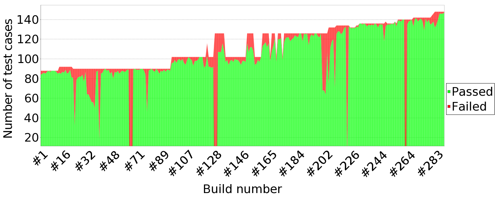

Apps for Extending OMERO.web
OME Dundee 2016
Ola Tarkowska | Will Moore
Outline
- What's new in OMERO.web?
- The OMERO.web framework
- Creating an OMERO.web app
- Example apps
- OMERO.gallery
- OMERO.figure
What's new in OMERO.web?
- Deployment
- JSON API
- Display of metadata and annotations
- Image viewer
- Robot Framework Selenium tests
Robot Framework
Selenium Tests

# E.g. Run rdef tests on Chrome:
$ ./build.py -f components/tests/ui/build.xml web-chrome -DTEST=rdef_test.txt
Robot Framework
Selenium Tests
Daily Test Results
OMERO API
- Uses ICE (ZeroC) for remote API access

OMERO.web framework

OMERO.web documentation
webgateway API
- Json data: e.g. Image json webgateway/imgData/<imageId>/
-
Image rendering: webgateway/render_image/<imageId>/<z>/<t>/
Create an OMERO.web app
- OMERO.web uses the Django framework to support apps
- Apps can be installed onto existing OMERO.web deployments
- See OMERO.web developer docs | Creating an app documentation
Show a Dataset of images
# urls.py
url( r'^dataset/(?P<datasetId>[0-9]+)/$', views.dataset ),
# views.py
@login_required()
def dataset(request, datasetId, conn=None, **kwargs):
ds = conn.getObject("Dataset", datasetId)
return render(request, "dataset.html", {"dataset": ds})
<!-- dataset.html -->
<html><body>
<h1>{{ dataset.getName }}</h1>
{% for i in dataset.listChildren %}
<img src="{% url 'webgateway.views.render_thumbnail' i.id %}" />
{{ i.getName }}
{% endfor %}
</body></html>
App examples
- Ship with OMERO.web:
- webgateway | webclient | webadmin
- External sites:
- OME projects:
- Examples & Prototypes:
Webclient plugins
- Hooks to bring app content into webclient
- See webclient plugin docs
$ bin/omero config set omero.web.login_redirect
'{"redirect": ["webindex"], "viewname": "webindex_custom"}'

Left hand pane plugins

Center pane plugins
$ bin/omero config append omero.web.ui.center_plugins
'["Auto Tag", "webtagging/auto_tag_init.js.html", "auto_tag_panel"]'
Right hand pane plugins
$ bin/omero config append omero.web.ui.right_plugins
'["ROIs", "webtest/webclient_plugins/right_plugin.rois.js.html", "image_roi_tab"]'

Example: OMERO.gallery
- Created as an example 'public gallery' app
- Provides basic Group -> Project -> Dataset -> Image browsing
- Uses bootstrap css framework
- Supports mobile, including phones
- Easy to customize
- Example: Liverpool CCI OMERO gallery From Raphaël Lévy's lab.
Summary
- Apps available to install:
- Or write your own!
Thank you
- Prof. Jason Swedlow
- OME team